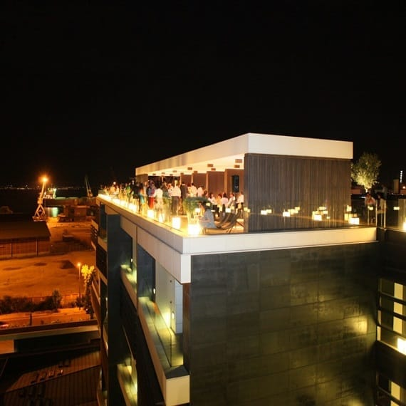
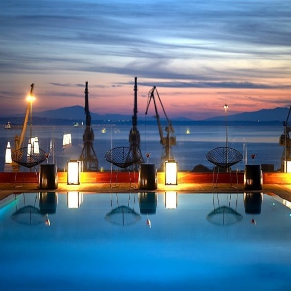
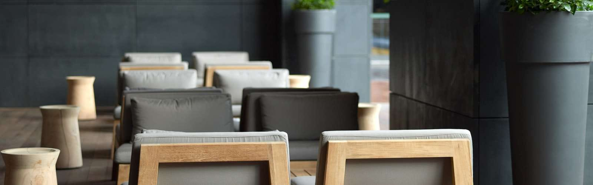
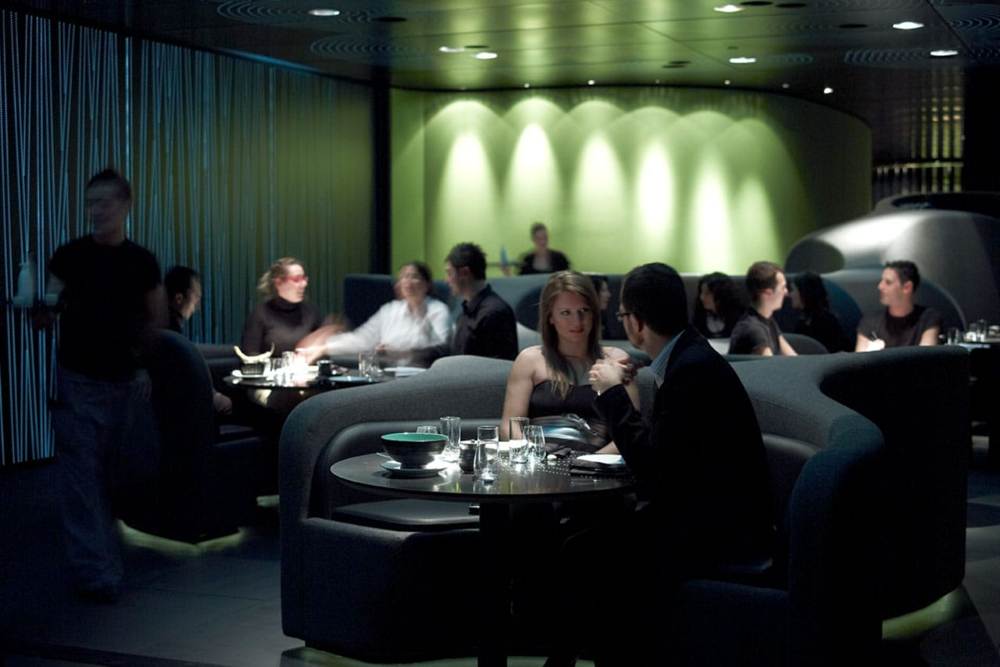
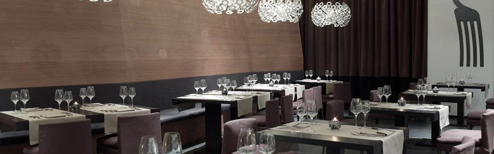
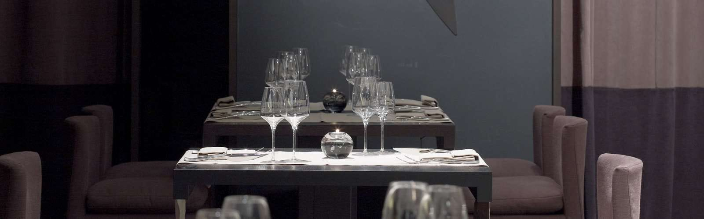
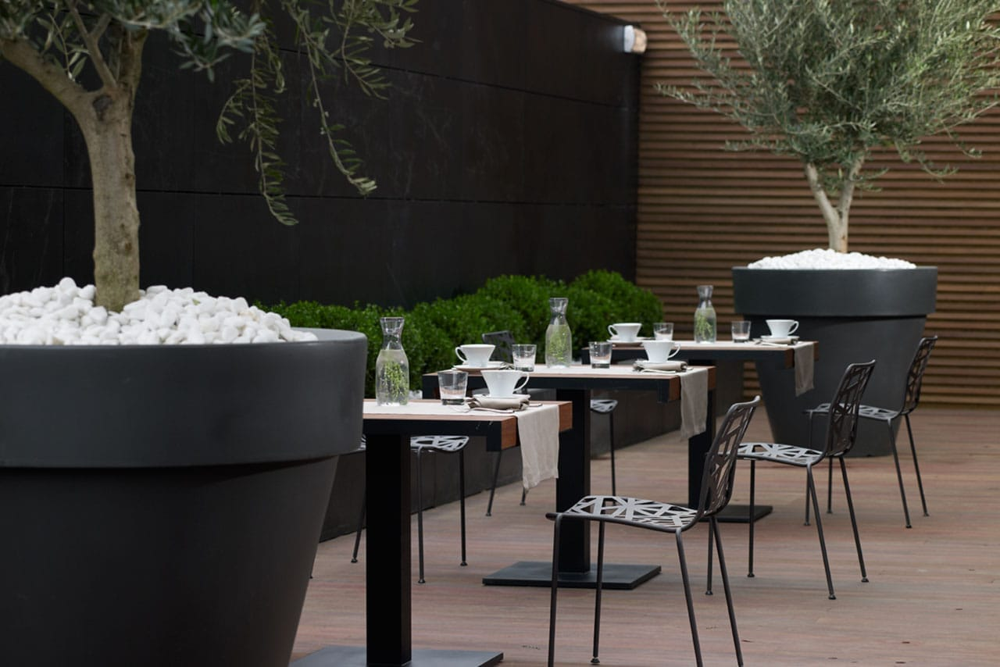

The Met · Γαστρονομία
Δημιουργική ελληνική και σύγχρονη ασιατική κουζίνα από τον Executive Chef Δημήτρη Τσανανά, σε τέσσερις χώρους με εντελώς διαφορετική ατμόσφαιρα.


7ος όροφος · Rooftop
Δίπλα στην rooftop πισίνα, με θέα 360° στη Θεσσαλονίκη. Sushi, μεσογειακά signature πιάτα και cocktails, για ρομαντικό δείπνο, after-work ποτό ή ιδιωτική εκδήλωση.
Κλειστό για τον χειμώνα · Ξανά την άνοιξη 2027Το Pool Bar ανοίγει μαζί με το Sky Bar. Για ιδιωτικές εκδηλώσεις στην ταράτσα το καλοκαίρι, δείτε εδώ.
Ισόγειο · Καθημερινά
Ένα μπαρ 18 μέτρων μπροστά σε τοίχο επιχρυσωμένο 22 καρατίων. Signature cocktails, ελαφριά πιάτα ή όλο το all day μενού, με ελληνικά και διεθνή κρασιά.
Ανοιχτό σήμερα 08:30 – 01:00Τελευταία παραγγελία φαγητού 23:45 · ποτού 00:45

Από το all day menu
Asian · Greek
Ασιατική καινοτομία με ελληνική υπογραφή, από τον σεφ Δημήτρη Τσανανά. Ο χώρος σχεδιάστηκε από το λονδρέζικο γραφείο Andy Martin & Associates.
Αυτή την περίοδο το μενού του Chan σερβίρεται στο Long Bar, σε πιο ήσυχο και χαλαρό περιβάλλον. Την άνοιξη επιστρέφει στο Sky Bar Restaurant.

Ισόγειο · Πρωινό



Πλούσιος μπουφές πρωινού για να ξεκινήσει σωστά η μέρα σας. Για επισκέπτες εκτός ξενοδοχείου, κράτηση στο 2310 017 000.